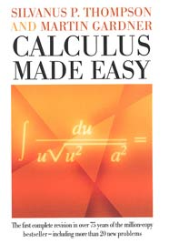

《轻松学习微积分》是 Silvanus P. Thompson 于 1910 年首次出版的关于微积分的书籍，被认为是该学科经典而优雅的入门书籍。
来自 维基百科
我读了 Silvanus P. Thompson 的《轻松学习微积分》，直到今天，它仍然是我向外行解释复杂技术主题的灵感来源。 这是一本很棒的书，即使你懂数学，如果你想了解如何向他人教授复杂性，你也必须阅读它。 (来源)
汤普森创造了一个温暖、诱人的环境，让学生能够学习并掌握微积分的真正精髓，而没有任何多余的华丽或明显的专业术语。 (来源)
-- MathBlog
大多数大学的微积分教材都很重； 这个没有——它只是直奔主题。 这就是我学习微积分的方式：我的叔叔给了我一本。 (来源)



感谢 Paula Appling、Don Bindner、Chris Curnow、Andrew D. Hwang 以及 古腾堡计划在线分布式校对团队准备了原始 PDF 文件。
主题借鉴自 Dive Into HTML5，作者为 Mark Pilgrim，根据 CC-BY-3.0 许可发布。
请将更正、建议和评论发送至 nadvornik.jiri@gmail.com